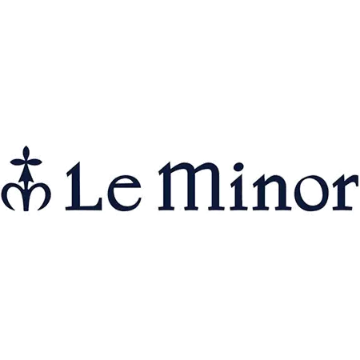

私たちの理念
私たちは「Standard（定番）を再定義し、再構築する」を理念に、
欧米を中心に上質なアパレルブランドを日本へ輸入・ご紹介しています。
「Standard（定番）を再定義し、
再構築する」を理念に、
欧米を中心に上質なアパレルブランドを
日本へ輸入・ご紹介しています。
パートナーシップとご提案
長年にわたって信頼あるパートナーと築き上げた関係性を基盤に、
普遍的な価値を持つアイテムを国内のお客様へご提案しています。
長年にわたって信頼あるパートナーと
築き上げた関係性を基盤に、
普遍的な価値を持つアイテムを
国内のお客様へご提案しています。
実績と信頼
RockmountやHarleyをはじめとする
欧米の厳選ブランドとの取引を32年間継続しており、
現在までに25社以上のメーカーとの取引実績を有しています。
RockmountやHarleyを
はじめとする
欧米の厳選ブランドとの取引を
32年間継続しており、
現在までに25社以上のメーカーとの
取引実績を有しています。
Our Philosophy
With our philosophy of "Redefining and Reconstructing Standards,"
we import and introduce high-quality apparel brands from Europe and America to Japan.
With our philosophy of "Redefining and
Reconstructing Standards,"
we import and introduce high-quality
apparel brands from Europe and America to Japan.
Partnership & Proposal
Based on long-standing trusted partnerships,
we offer timeless, valuable items to our customers in Japan.
Based on long-standing trusted partnerships,
we offer timeless, valuable items to
our customers in Japan.
Achievements & Trust
We have maintained business relationships with carefully selected European and American brands, including Rockmount and Harley, for 32 years,
and have established partnerships with more than 25 manufacturers to date.
We have maintained business relationships with
carefully selected European and American brands,
including Rockmount and Harley, for 32 years,
and have established partnerships with
more than 25 manufacturers to date.
取扱いBrand Brands We Carry
Rockmount Mfg. Co. (USA)
1946年にアメリカ、デンバーで創業。
ウェスタンシャツに初めてスナップボタンを採用しました。
顧客にはエリック•クラプトンやロバート•レッドフォードがいます。
1946年にアメリカ、デンバーで創業。
ウェスタンシャツに
初めてスナップボタンを採用しました。
顧客にはエリック•クラプトンや
ロバート•レッドフォードがいます。
Founded in 1946 in Denver, USA.
Pioneered the use of snap buttons in Western shirts.
Customers include Eric Clapton and Robert Redford.
Founded in 1946 in Denver, USA.
Pioneered the use of snap buttons in Western shirts.
Customers include Eric Clapton and Robert Redford.
Harley of Scotland
10年にわたりカラー別注などの当社独自のスタイルを展開しています。
シームレスなニットは着用にストレスがなく着心地は最上級です。
ファクトリーニットブランドである
Harley of Scotland。
10年にわたりカラー別注など
当社独自のスタイルを
展開しています。
シームレスなニットは着用にストレスがなく
着心地は最上級です。
Their seamless knits offer supreme comfort with zero stress during wear.
including custom colors, with Harley of Scotland,
a Scottish factory knitwear brand, for 10 years.
Their seamless knits offer supreme comfort with zero stress during wear.
Eribe Knitwear (Scotland)
15年以上にわたりカラーコンビネーションがユニークなセーターやマフラー
手袋などのニット小物類をご紹介しています。
Eribe knitwear。
15年以上にわたりユニークな
セーターやマフラー手袋など
ニット小物類をご紹介しています。
uniquely color-combined sweaters, scarves, gloves,
and other knit accessories from Eribe Knitwear,
another Scottish knit artisan.

Le Minor (France/Grammatico)
ワイドTシャツ、ロングスリーブ、ショートスリーブなど全て別注のスタイルです。
ボーダーニットシャツを
企画販売しています。
ワイドTシャツ、ロングスリーブ、
ショートスリーブなど全て別注の
スタイルです。
All styles, including wide T-shirts, long sleeves, and short sleeves, are custom-made.
20-gauge cotton yarn from Le Minor (Grammatico) in France.
All styles, including wide T-shirts, long sleeves,
and short sleeves, are custom-made.